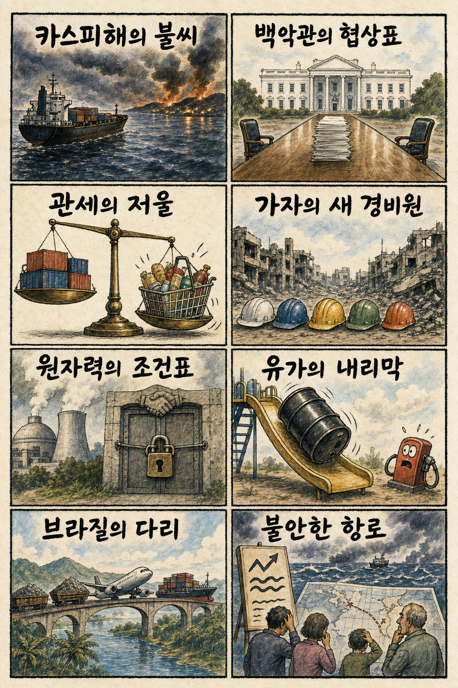
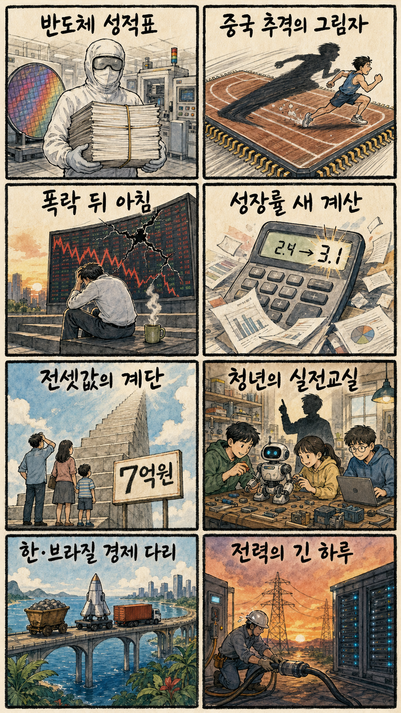

01
워크데이 8.24% 급등 — AI 소프트웨어 순환매
내용요약 159.69달러로 8.24% 상승했습니다. AI 소프트웨어 순환매와 기술적 골든크로스 신호가 매수세를 자극했다는 보도입니다.
예상여파 기업용 소프트웨어가 AI 비용 절감 기대를 실적 성장으로 연결하는지 확인할 기준이며 단기 급등 추격은 경계해야 합니다.
MORNING_BRIEFING_20260729
작성 시각: 2026-07-29 06:39 KST · 직전 미국 정규장과 2026-07-29 KST 당일 공개 기사 기준
미국 7월 28일 정규장은 다우 +1.03%, S&P 500 +0.21%, 나스닥 -0.22%로 혼조 마감했습니다. 중동 긴장 완화와 유가 하락은 경기민감주를 받쳤지만 AMD·ARM·반도체 장비와 AI 서버주 급락은 기술주 투자 속도 우려를 드러냈습니다. 전일 큰 폭 조정을 겪은 한국장은 반등 시도보다 변동성 관리와 SK하이닉스 실적 확인이 우선입니다.
| 지수 | 종가 | 등락률 | 한국 증시 영향 |
|---|---|---|---|
| 다우존스 | 52,747.32 | 1.03% | 유가 하락과 경기민감주 강세가 국내 가치주 심리에 완충 |
| S&P 500 | 7,428.78 | 0.21% | 소폭 상승으로 위험선호는 유지됐지만 AI 투자 경계가 상단을 제한 |
| 나스닥 종합 | 24,876.91 | -0.22% | AI칩·서버·장비 약세가 국내 반도체에 직접 부담 |
유가 하락과 경기민감주 방어로 다우는 강했지만 기술주는 갈렸습니다.
AMD·ARM·AMAT·델 급락이 AI 지출과 마진 우려를 동시에 보여줬습니다.
SK하이닉스 실적과 HBM 전망이 전일 급락 뒤 국내 반도체 심리를 가릅니다.
검증 가능한 수급·확률 표본이 부족해 오늘 공식 추천은 내지 않습니다.
7월 28일 보고서는 문턱을 통과한 공식 추천이 없었으며 관심 연결종목만 제시했습니다. 사후 수익을 보고 추천 기록으로 바꾸지 않습니다.
| 종목 | 7/28 실제 시가 | 7/28 종가 | 시가→종가 |
|---|---|---|---|
| SK하이닉스 | 1,272,000원 | 1,550,000원 | +21.86% |
| 삼성SDS | 210,000원 | 200,500원 | -4.52% |
| 한국가스공사 | 35,000원 | 34,050원 | -2.71% |
| 지수 | 종가 | 등락률 | 해석 |
|---|---|---|---|
| 다우존스 | 52,747.32 | 1.03% | 유가 하락과 경기민감주 강세가 국내 가치주 심리에 완충 |
| S&P 500 | 7,428.78 | 0.21% | 소폭 상승으로 위험선호는 유지됐지만 AI 투자 경계가 상단을 제한 |
| 나스닥 종합 | 24,876.91 | -0.22% | AI칩·서버·장비 약세가 국내 반도체에 직접 부담 |
저유가 수혜 운송·소비, 경기민감 가치주, 기업용 소프트웨어, 가스·원전 인프라
AI칩·반도체 장비, AI 서버, 범용 메모리, 고평가 기술주
내용요약 159.69달러로 8.24% 상승했습니다. AI 소프트웨어 순환매와 기술적 골든크로스 신호가 매수세를 자극했다는 보도입니다.
예상여파 기업용 소프트웨어가 AI 비용 절감 기대를 실적 성장으로 연결하는지 확인할 기준이며 단기 급등 추격은 경계해야 합니다.
내용요약 454.62달러로 8.15% 내렸습니다. AI 데이터센터 계약 소식에도 시장 전반의 AI칩 투자 속도 둔화 우려가 더 크게 반영됐습니다.
예상여파 국내 HBM·반도체 장비주에도 투자 사이클 둔화 우려가 전이될 수 있어 실적 가시성 확인이 필요합니다.
내용요약 244.74달러로 8.11% 하락했습니다. AI 투자 수혜가 일부 선두 기업에 집중되면서 설계자산 업종의 고평가 부담이 부각됐다는 보도입니다.
예상여파 AI 생태계 안에서도 매출 실현 속도에 따른 차별화가 커질 수 있고 국내 설계·IP 관련주 심리에도 부담입니다.
내용요약 476.46달러로 7.82% 내렸습니다. AI칩 설비투자 증가율이 둔화할 수 있다는 우려가 반도체 장비주 매도로 번졌습니다.
예상여파 국내 전공정 장비·소재주는 고객사의 실제 설비투자 계획과 수주잔고가 주가 방어력을 가를 전망입니다.
내용요약 392.10달러로 8.15% 하락했습니다. AI 서버 매출 성장보다 부품비와 경쟁에 따른 마진 압박이 부각됐다는 보도입니다.
예상여파 AI 서버 수요가 강해도 수익성이 동반되지 않으면 밸류체인 전반의 이익 기대가 낮아질 수 있습니다.
다우 상승과 유가 하락은 운송·소비·가치주에 완충이지만, 나스닥 약세와 AI 하드웨어 동반 급락은 국내 반도체 반등의 질을 제한합니다. 특히 전일 KOSPI와 SK하이닉스의 큰 변동 뒤에는 시초가 추격보다 실적 발표 내용, 외국인 현·선물, 환율, 전일 저점 방어를 확인해야 합니다. 좋은 실적과 안전한 진입 시점은 별개로 판단합니다.
오늘은 추천 없음 — 현금 관망
전일까지의 외국인·기관 수급, 컨센서스 변화, 유사 조건 30건 이상의 확률 보정과 손익비 1.5를 동시에 검증하지 못했습니다. 전일 시장 급변과 실적 이벤트 앞에서 임의 점수로 75점 문턱을 채우지 않습니다.
관심 연결종목 SK하이닉스(실적·HBM 전망), 두산에너빌리티(원전·가스터빈 수주잔고), 삼성SDS(기업 AI)는 뉴스 연결 관찰 대상이며 매수 추천이 아닙니다. 장전 예상 급등 또는 시초가 급등 시 추격매수 금지입니다.
HBM 수요·가격·투자 계획과 중국 메모리 영향 발언을 봅니다.
전일 급락 뒤 현물·선물 동반 순매수 전환 여부를 확인합니다.
AMD·ARM·장비주 급락이 국내 공급망으로 이어지는지 봅니다.
브렌트유 하락이 원화와 운송·소비 업종에 주는 영향을 점검합니다.
핵심 요약: AI 산업은 메타·블랙록의 대형 데이터센터 투자와 AMD의 신규 계약으로 확장되는 한편, 전력 조달과 반도체 투자 속도에 대한 부담도 커졌습니다. 국내에서는 SK하이닉스 실적과 중국 메모리 추격이 오늘의 핵심 변수입니다.
내용요약 메타가 블랙록과 합작법인을 세워 텍사스 AI 데이터센터에 140억달러를 투자한다는 보도입니다. 대규모 연산 인프라를 자산운용사와 함께 조달하는 방식이 확대되고 있습니다.
예상여파 데이터센터 건설·전력·냉각 공급망에는 장기 수요가 생길 수 있지만, 높은 자본비용과 전력 확보가 사업 수익성을 가를 전망입니다.
내용요약 AMD가 코어 사이언티픽과 AI 데이터센터 계약을 체결했다는 보도입니다. AI칩 경쟁이 제품 판매에서 전력·공간을 묶은 인프라 계약으로 넓어지고 있습니다.
예상여파 엔비디아 중심 생태계의 다변화 가능성을 보여주지만, 실제 가동 일정과 고객 수요가 AMD의 데이터센터 매출로 이어지는지 확인해야 합니다.
내용요약 국내 벤처투자 업계가 처음부터 해외 시장을 겨냥하는 제조 AI 스타트업에 투자를 집중하겠다는 흐름을 전했습니다.
예상여파 한국의 제조 데이터와 현장 노하우가 수출형 소프트웨어로 연결될 수 있으나 반복 가능한 해외 매출과 고객 검증이 핵심입니다.
내용요약 SK하이닉스의 2분기 실적 발표가 중국발 메모리 공급 우려와 AI 투자 둔화 논란 속 반도체주 반등의 분수령으로 꼽혔습니다.
예상여파 HBM 수요·가격·설비투자 전망이 기대를 충족하면 심리 회복에 도움이 되지만, 장전 기대가 과도하면 발표 뒤 변동성이 커질 수 있습니다.
내용요약 OPEC이 2050년 세계 전력 수요가 크게 늘어날 것으로 보고 원전과 가스 등 안정적 공급원 확보가 필요하다고 전망했습니다.
예상여파 AI 데이터센터와 전기화가 전력망·가스터빈·원전 투자를 자극할 수 있으며 연료 가격과 송전망 병목이 비용 변수입니다.
핵심 요약: 카스피해로 번진 전쟁 위험과 가자 안정화 구상, 미·중 관세 갈등이 이어지는 가운데 외교 협상 기대가 유가를 낮추고 있습니다. 위험 완화와 확전 가능성이 동시에 존재해 에너지·해운 변동성은 남아 있습니다.
내용요약 우크라이나의 이란 연계 선박 공격이 카스피해까지 전쟁 위험을 넓힐 수 있다는 분석입니다. 러시아 지원 물류 차단이 공격 배경으로 지목됐습니다.
예상여파 카스피해 에너지·화물 항로의 보험료와 운송비가 오를 수 있고 러시아·이란의 대응에 따라 확전 위험이 커질 수 있습니다.
내용요약 우크라이나 대통령이 백악관을 방문해 미국 대통령과 회담한다는 보도입니다. 전쟁 지원과 협상 조건이 주요 의제가 될 전망입니다.
예상여파 지원 규모와 휴전 조건의 변화는 유럽 안보, 방산 수요와 에너지 시장의 위험 프리미엄에 영향을 줄 수 있습니다.
내용요약 중국이 미국의 강제노동 관련 12.5% 관세 부과에 반발했지만 즉각적인 보복은 유보했다는 보도입니다.
예상여파 양국이 보복 수위를 조절하면 공급망 충격은 제한될 수 있으나 섬유·태양광·소재 기업의 원산지 검증 부담은 커질 수 있습니다.
내용요약 이스라엘이 가자지구에 국제안정화군을 투입하는 구상을 승인했다는 보도입니다. 휴전 이후 치안과 통치 구조 논의가 구체화되는 단계입니다.
예상여파 참여국과 당사자 동의가 확보되면 인도지원 통로에 도움이 되지만, 임무 범위를 둘러싼 갈등은 새 불안 요인이 될 수 있습니다.
내용요약 중동의 즉각적 전쟁 위험이 낮아졌다는 평가 속에 브렌트유가 84달러대로 내려가며 국제유가가 사흘 연속 하락했습니다.
예상여파 운송·항공·소비 비용에는 우호적이지만 에너지 기업과 산유국 재정에는 부담이며 협상 결렬 시 되돌림 위험이 남습니다.

핵심 요약: SK하이닉스 실적이 급락 뒤 반도체 심리의 분수령으로 떠올랐고 중국 CXMT 추격은 구조적 부담입니다. 성장률 전망 상향, 청년 직무교육과 한·브라질 기업 협력은 내수·인력·공급망의 중기 변화를 보여줍니다.
내용요약 SK하이닉스의 2분기 실적 발표가 중국발 메모리 공급 우려와 AI 투자 둔화 논란 속 반도체주 반등의 분수령으로 꼽혔습니다.
예상여파 HBM 수요·가격·설비투자 전망이 기대를 충족하면 심리 회복에 도움이 되지만, 장전 기대가 과도하면 발표 뒤 변동성이 커질 수 있습니다.
내용요약 중국 CXMT의 빠른 성장으로 삼성전자와 SK하이닉스가 지켜온 메모리 시장의 경쟁 구도가 흔들릴 수 있다는 보도입니다.
예상여파 범용 D램 가격 압력은 커질 수 있고 한국 기업은 HBM·첨단 패키징·원가 경쟁력으로 격차를 유지해야 합니다.
내용요약 아세안+3 거시경제조사기구가 한국 성장률 전망을 2.4%에서 3.1%로 높이고 물가 전망도 2.6%로 상향했습니다.
예상여파 성장 눈높이 상향은 경기민감주에 긍정적이지만 물가가 함께 오르면 금리 인하 기대가 약해질 수 있습니다.
내용요약 청년 취업을 돕기 위한 현장형 직무교육 과정 내일아카데미가 개설된다는 보도입니다.
예상여파 교육이 기업 수요와 채용으로 이어지면 미스매치 완화에 도움이 되지만 수료 뒤 취업률과 일자리 질을 지속 점검해야 합니다.
내용요약 한국과 브라질 기업인들이 핵심광물·산업 협력을 강화하는 경제 협력 채널을 가동한다는 보도입니다.
예상여파 자원 조달 다변화와 현지 시장 진출 기회가 커질 수 있으며 구체적 계약과 투자보호 조건이 후속 성과를 좌우합니다.
